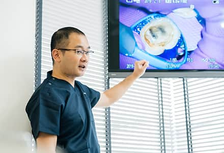

数少ない国の認定医院
日本歯周病学会専門医研修施設
「日本歯周病学会専門医研修施設」とは、日本歯周病学会から専門医の育成を任された歯科医院です。日本歯周病学会指導医が常勤として勤務し、歯周病学に関連する課題について定期的に教育・研修が行なわれており、必要な設備のある医院のみが認められています。
藤沢の歯医者、玉木歯科医院はこの日本歯周病学会専門医研修施設の認定を受けています。
日本歯周病学会専門医研修施設長として先頭に立ち、日本の歯科業界に貢献
認定を行っている日本歯周病学会は、日本における歯周病の研究、教育、医療および予防を推進し、国民の保健の増進に寄与することを目的とする学会です。玉木歯科医院は、日本歯周病学会専門医制度規制に基づき、教育や研修の実績などの基準を満たした研修施設として認定されました。研修施設とは「歯周病学に関連する課題について定期的に教育・研修が行なわれており、教育・研修の実施に必要な設備のある機関」を指します。日本歯周病学会の認定医・専門医を目指す歯科医師に向けて、積極的に教育および育成を行い、歯科業界に貢献するだけでなく、この藤沢という土地から誇れる歯科医師を輩出し続けることで、地域貢献にも努めてまいります。
全国にわずかしかない国の認定研修医院
全国には、68,761件の歯科医院があります。その中でも、国からの認定を受けている日本歯周病学会専門医研修施設は、169件しかありません。当院は、その数少ない国の日本歯周病学会専門医研修施設のひとつです。ほとんどの認定医院が大学病院の歯周病科などである中、当院のように個人の歯科医院が大学病院と同等の評価を受けているのは極めて稀なことです。厳しい基準の中選ばれた当院では、一般の歯科医院では行うことができない治療法や抜歯を回避する治療法などを提供することができます。
【参照】
医療施設動態調査（2018年2月末概数）、特定非営利活動法人 日本歯周病学会HP：認定医・歯周病専門医・指導医一覧（2019年8月末時点）
研修内容

当院では論文抄読・症例検討会などの院内勉強会を積極的に行っています。正しい知識・正確な技術を伝え続け、将来、患者様の豊かな生活を支えることのできる、若い人材の育成にも取り組んでいます。当院は、国から認められた日本歯周病学会専門医研修施設として認定医・専門医の積極的育成を行っています。また、日本歯周病学会の専門医委員会が認めた歯周病に関する学会および研修会を主宰する医院として、外部の先生にも門戸を広げた勉強会を行っており出席者は認定医・専門医の単位認定が可能となっています。
最適な治療のために
当院は、歯周病治療に真摯に向き合ってきた結果、日本歯周病学会専門医研修施設として国から認められていますが、常に他の治療に関しても知識を深め、技術の取得に励んでいます。歯周病治療とは、“お口全体”を考えた包括的な診療が必要となるため、他の治療とも深く関わってきます。そのため、絶えず知識・技術の習得を怠りません。患者様の真の健康のため、治したいという想いに確実に応えるために、どんな時でも最適な治療をご提供できるよう、日々研鑽しています。